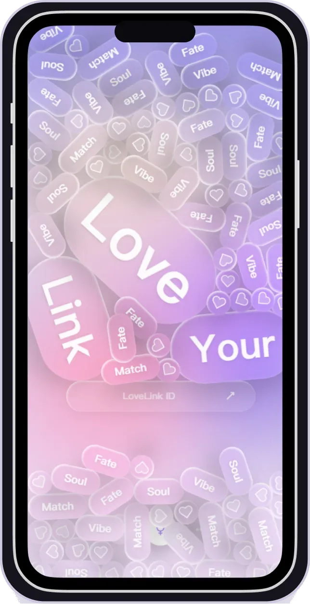
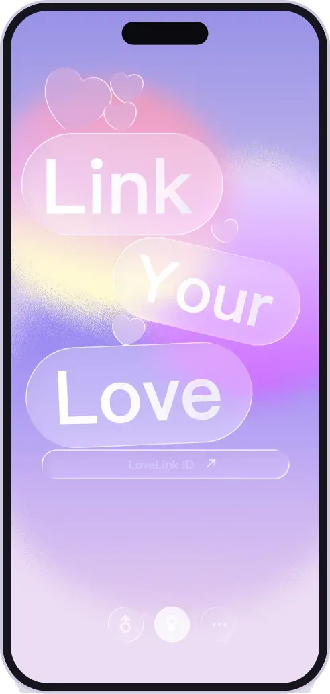
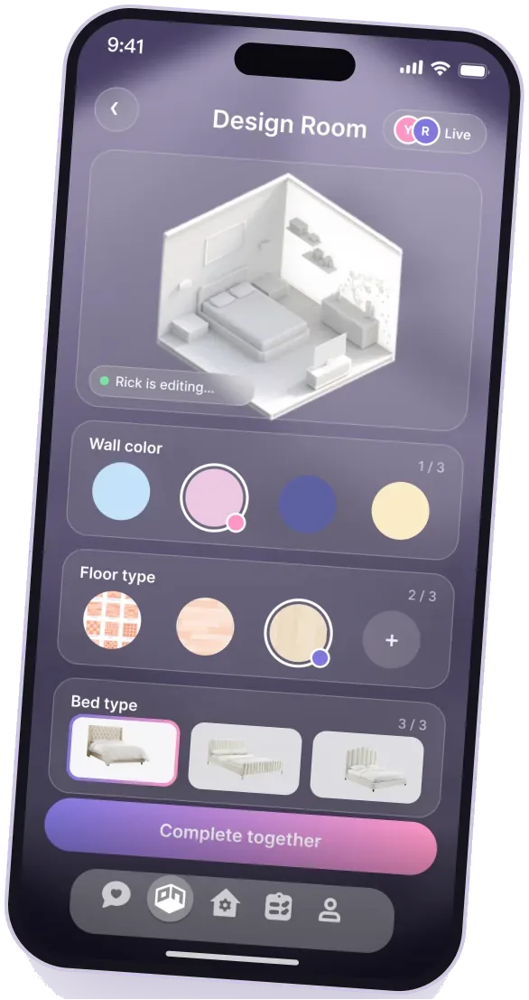
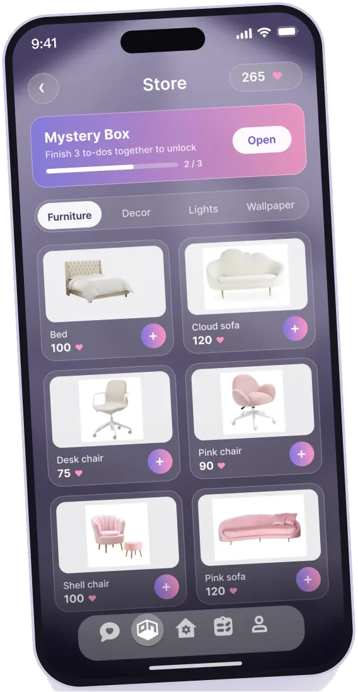
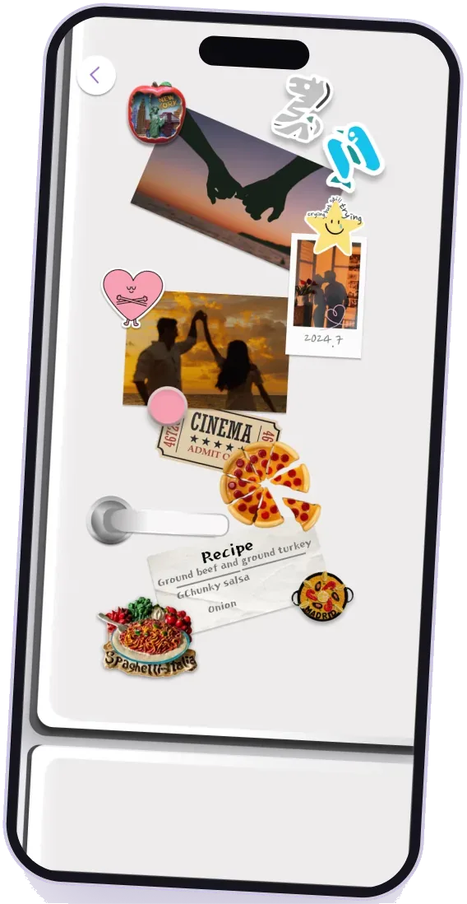

An iOS app for long-distance couples: AI friends when your partner can’t answer, a room you build together, and a countdown to the next visit.
Two time zones, one relationship.
Long-distance relationships are common between 18 and 35: school, a new job, a long business trip, a family to care for, or someone you met online.
Every couple I asked already had chat, calls and photos. Still, 75% said a struggling relationship disrupted their normal life, and most said 3 months was the longest they could go without meeting.
The hard moment isn’t a missing feature. It’s 3 a.m. in one city, and the person you want to talk to is asleep in the other.
How might we help long-distance couples feel supported when the other can’t answer, and keep building memories while they’re apart?
“I need this app right now.”
A friend in a long-distance relationship
A one-week survey of 121 people aged 20 to 30, and three in-depth interviews.
What do you think is the biggest difficulty in a long-distance relationship?
121 peopleHover a card to hear it in people’s own words.
Broken communication
Time zones and busy schedules interrupt contact.
Lack of company
No instant response when you miss each other.
No shared memories
Nothing to do together.
Trust & security
Anxiety that the other person will drift away.
Sources: my survey (n = 121) and 3 interviews. Quotes shortened.
Four struggles, four design rules.
I picked the four things that hurt a relationship most in the survey and interviews. Each became one rule.
Three features, each answering one struggle.
Talk to the AI before you fight.
Two AI friends, ELVO and VELO, catch your feelings when your partner can’t. In Argue mode they take both sides. Hover a pin.
Build the home you imagine, together.
A shared bedroom you decorate as a pair. To-dos earn credits, credits open furniture mystery boxes, and the fridge shows what’s for dinner on both sides.


See each other at a glance.
Home answers the three questions people asked most: where are they, are they okay, and when do we meet?
Same idea, redrawn.
The 2026 design is the one you see. Move your cursor across the phone to reveal the 2024 original underneath.
Move across to compare · tap on a phone
Opening
2024“Love Link” is a faint line of text, with a gender choice, an ID field and a slide-to-go toggle underneath.2026“Link / Your / Love” became three big frosted-glass words that say what to do in one glance.Action
2024Pick a gender, type the ID, then slide the toggle.2026Just one glass input with an arrow. The gender icons moved to the bottom; the toggle and social icons are gone.
Background
2024Flat lilac cards stacked on a pale background.2026Your photo fills the screen and every card turned into frosted glass over it.Countdown & time
2024“6 days till we meet” with a progress bar and the distance; their time sits in a small clock.2026“Meet day” and “their time zone” sit side by side in one card. The distance readout is gone.Tab bar
2024A full-width purple bar fixed to the bottom.2026A dark glass pill floating over the photo, with line icons.
Overall look
2024A light page with grey bubbles and the “What’s wrong?” input at the top.2026A dark glass screen. Your complaint becomes a card at the top with an “Upset” mood chip.Who’s talking
2024ELVO and VELO are told apart only by name.2026Each AI bubble gets its own colour dot, and your partner’s reply is a white card.Ending
2024A purple STOP button at the bottom.2026A “Stop argument” pill, and the header says ELVO and VELO are mediating.
The whole app, tappable.
Start at sign-up, link with your partner, then open Chat and tap Argue mode. The pink dot shows where to tap next.
After testing with 8 users, people were drawn to Argue mode.
They also hoped the chat screen would guide them more on how to handle a relationship, not just give them a place to talk.
Scope down to go deep.
I started with many activities that could help couples, like building a home together and watching movies together. The app ended up with too many features and I couldn’t think any of them through.
Scope down further, then personalize.
With more time, I’m already revising the original UI and UX. I want to cut further, keep improving the chat page and its features based on user testing, and make the app feel more personal.
VIVA TOY→